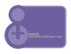

پذيرش > تریبون > بیش از پانصد امضا و حمایت بین المللی از بیانیه فعالان زنان خاورمیانه
 بیانیه بیانیه

 بیش از پانصد امضا و حمایت بین المللی از بیانیه فعالان زنان خاورمیانه بیش از پانصد امضا و حمایت بین المللی از بیانیه فعالان زنان خاورمیانه
19 اسفند 1388 - هم پیمان برای مبارزه با خشونت - نسخه قابل چاپ
تغییر برای برابری - هم پیمان برای مبارزه با خشونت هشتم مارس 1857 زنان کارگر کارگاههای پارچه بافی و لباس دوزی نیویورک آمریکا به خیابان ها ریختند و خواهان افزایش دستمزد, کاهش ساعات کار و بهبود شرایط نامناسب کاری خود شدند. این تظاهرات با حمله پلیس و ضرب و شتم زنان معترض به خشونت کشیده شد. حدود 50 سال بعد و در پی اعتراضات مداوم زنان برای نخستین بار در سال 1913 هشت مارس بعنوان "روز جهانی زن" از سوی زنان معترض انتخاب گردید و پس از نزدیک به 60 سال مبارزه, سازمان ملل متحددر سال 1975 این روز را به رسمیت شناخت.
از آن هنگام تا کنون بارها "روز جهانی زن" فرصتی برای اعتراضهای گسترده به مقولات جنگ, نظامی گری, سلطه و خشونت بوده است که از آن جمله می توان به 8 مارس 1915 و 1916 با شعار علیه جنگ امپریالیستی, 8 مارس 1936 در برلین در اعتراض به فاشیسم و 8 مارس 1969 در آمریکا علیه جنگ ویتنام اشاره کرد.
پس از گذشت سالها زنان خاورمیانه همچنان در شرایطی به سر می برند که خاطره اش در بسیاری کشورها به تاریخ سپرده شده است. زنان خاورمیانه سالهاست که با جنگ, سلطه, نظامی گری, خشونت های نظامی, کنترل و سرکوب, تبعیض و نابرابری های اجتماعی دست به گریبانند. رویدادهای این منطقه در این سالها به رغم مبارزات بی وقفه مردمی, همواره به دلیل شرایط داخلی و دخالت های خارجی, وضعیت را به سمت بحران و گاه فاجعه پیش برده است. بحرانهایی که رواج هر چه بیشتر خشونت در این جوامع را به همراه داشته اند. تبعیض های جنسیتی, قومیتی و طبقاتی اگرچه همه ساکنین منطقه را تحت تاثیر قرار داده, اما زنان همواره در معرض خطر بیشتری قرار گرفته اند.
مصادیق این خشونت ها را می توان در پایمال شدن حقوق زنان با رواج ازدواجهای اجباری و زودهنگام, سربازگیری, خشونت های ناموسی و کنترل و سرکوب همه جانبه زندگی زنان این منطقه به وضوح مشاهده کرد.
اکنون و در حالی که نزدیک به صد سال از اولین اعتراض گسترده زنان در "روز جهانی زن" می گذرد, ما فعالین حقوق زنان در منطقه خاورمیانه خواهان پایان نظامی گری, سلطه, تبعیض و انواع نابرابری های اجتماعی هستیم و از تمامی خواهران خود در سراسر جهان می خواهیم که همبستگی خود را برای مقابله با انواع خشونت علیه زنان در این منطقه اعلام و در راه پایان دادن به آن تلاش کنند.
اسامی حامیان به ترتیب حروف الفبا:
آذر خیامی- آسیه امینی - آذر صیرفیان- آذرخش وندچالی- آرمین بهاری- آریو ایران- آرام منصوری- آزاده آزاد- آزاده بنایی – آزاده فرامرزیها- آقایی - آناهیتا پوینده – آناهیتا ش - آیدا ایرانی - آیدا سعادت- آیدا قجر - آینده آزاد - ابراهیم امدادی - احمد زاهدی لنگرودی - احمد کرمانی –اکبر شرابیانی - اکبر محمودی - اکرم محمدی - المیرا انصاری- الناز انصاری - الناز بابایی- الناز ناطقی - الهام انصاری- الهام - الهام قیطانچی- الهام محمدی- الهام ملک پور- الهه امانی - الینا رستگار- امید کوهی - امید ولیپور- امیر ب - امیر حسین گنج بخش - امیر رشیدی- امیر سپاس- امیر معصومی - امیر یعقوبعلی - اهورامزدا جاوید- ایلقار دادگستری - بابک مهرانی- بلال مرادویسی -
بهار مجدزاده – بهاره علوی - بهرام آبتین - بهزاد ذوالنور- بهناز ستوده- بهنام دارایی زاده - بيتا نوانديش - بیتا طاهباز - بیتا یاری - بیژن کیارسی - پرستو - پرستو الله یاری - پرستو شباهنگ - پروین اردلان - پروین اشرفی- پروین حکاکی- پری حکاکی- پریسا انصاری - پریسا توکلی - پریسا حکاکی - پریسا روشن فکر - پریناز اتابکی- پوران- پوران الستاوی - پونه پیراسته - پونه غفاریان - پویش عزیزالدین - پيران آزاد - پیام روشنفکر – پویا ناصری - تارا نجداحمدی - تندیس - تورج یزدانی - ثریا فلاح - ثمین عابدی.
جادی میرمیرانی- جلوه جواهری - جمشید آیین دار- جیران مقدم - حسن علیزاده - حسن عربزاده حجازی - حسین علوی - حسین مردی – حسین مشفق - حمید رضا عسگری نژاد - حمیدرضا عرب- حمیده نظامی - خاطره فرامرزیها - خدیجه مقدم - خسرو خواجه نوری – خورشید-
د عبدی - داریوش کاشانی - دانیال امیر ابیض - دلارام علی - رزا حسامی – عامه عالمه - رضا سیاووشی- رضا کاویانی - رها آزادی - رها عسگری زاده- رهام پاران – روزبهان امیری - روحی شفیعی - روزبه میرچرخچیان - روشنک آسترکی – رعنا طایفی - رویا حکیمی- رویا سیبا - روجا بندری – رویا ایرانی - رویا صحرایی - رویا کاشفی - ریحانه سلیمی - ریحانه مظاهری - زری رجالل- زرین شقاقی – زهرا ارزنی – زهرا فریور - زهره اسدپور - زهره رستمی - زهره شجاعی - زهره طائبی - زينب غني - زینب پیغمبرزاده - زینب نعمت زاده –
سارا دهکردی - سارا زارع - ساقی قهرمان - سامان شاه محمدی - ساوانا - سپهر عاطفی - ستاره - ستاره سجادی - سحر سجادی- سعید حمیدی - سمانه موسوی- سمیرا یحیایی- سمیه رشیدی - سودابه فرخ نیا - سوفیا صدیق پور - سولماز ایکدر - سیما حسین زاده - سیمین رادمنش - سیمین کریمی - سیمین مرعشی - سینا انصاری - شایسته جلیل وند - شبنم غفوریان اعتماد- شراره آغاجری - شقایق آواره - شکوفه منتظری- شکوه ميرزادگی - شهرام اقدسی – شهرام قنبری - شهربانوجانعلیپور- شهریار عظیمی - شهره - شهره موحدی- شهزاد حسینی- شهین البرزی - شهین بنی احمدی - شیدا اقدسی- شیما فرزادمنش - شیوا تقوی - شیوا نوجو .
صبا سعادت نیاکی- صبری نجفی - صدیق جعفرپور طاهریان- صدیقه علیزاده- صنم بخشی- صبا محمدی - طیبه مونسان - ع جعفری - عباس بهبهانی - عباس مظاهری - عسگر آهنین - عسل اخوان - عسل اخوان - عشا مومنی - عطیه واعظی پور- عفت ماهباز- عقیق - عليرضا اخوان - علی اکبر امید مهر- علی طایفی- علی عبدی - علی کربلایی - علی نجار – علی ناصری - علی هنری- غزال م غزاله جلیلیان - غزاله عسگری زاده- غلامعلی امیرابراهیمی
ف. حمیدی- فرشین کاظمی نیا – فرزانه - فائزه عثنی عشری- فاطمه افضلی - فاطمه کیان ارثی - فتانه میرزازاده فراهانی - فرح نوربخش - فرزانه ایل بیگی- فرشته فراهانی - فرشته قاضی - فرناز فلاحت - فرناز کامران - فرناز کمالی - فرناز معیریان - فرهاد مرادیان - فریبا داودی مهاجر - فریبا نفیسی - فریبا یاوری- فریده یزدی - فهیمه خضر حیدری - فیروزه مهاجر.
كاوه مظفري- ک. یوسفی - کارن جواهری - کامران طاهباز - کورش اعتمادی - گلاله بهرامی - گلاله پاک - گلسا رسا - گلی نجفی.
لادن سلامی - لیلا نظری - لیلی گلزار- لیلا منفرد - م. نجاتی - مارال فرخی - مانا علوی - مجید فرد - مجید کاظمی - محسن مالجو- محمد باقر صمیمی - محمد طاهریپور- محمد مزرعه کار - محمود ح - مرجان افتخاری- مرجان نمازی - مرضیه اکبراوغلی - مريم زندي - مريم مجد - مریم - مریم حسین خواه – محبوبه حسین زاده - مریم افشاری - مریم الف - مریم امان پور- مریم اهری - مریم توفیقی - مریم خداکرمی - مریم شریف - مریم میرزا- مریم هان - مژگان ثروتی - مسعود نیک روش - مسیح علی نژاد – مصطفی خوش نویسان- مطهره یوشی - ملودی تزری- ملیحه زهتاب - ممنصوره شجاعی - مهدی - مهرنوش - مهران براتی - مهرناز مصدق - مهرنوش اعتمادی - مهرنوش ر - مهرنوش زنوزی- مهری جعفری - مهسا رویش - مهسا شکرلو - مهناز محمدي - مهین عادلی - مونا بهبهانی - مونا محمدزاده- میترا نجفی - میترا یوسفی - مینا - ن. رضوی خراسانی - نیلوفر گلکار- نادیا پور رحیم - نازلی فرخی - نازنین افشین جم – نازنین عاطفی - نازی عظیما- نازی ملاح- ناهید جعفری- ناهید خیرابی – ناهید توسلی - ناهید ممبینی - ناهید میرحاج - ناهیده بارور – نفیسه رحیمی نیا - نسترن خسروی مقدم - نسترن موسوی - نسرین چنگیزیان - نسیم- نسیم خسروی مقدم - نسیم طالبی - نسیم منوچهر آبادی - نوشابه امیری - نگار سماک نژاد - نگین شیخ الاسلامی وطنی - نهضت - نوشین دانشمند- نوشین کشاورزنیا - نیره توحیدی - نیما علوی - نیکزاد زنگنه - نیکی ایرانی - هما مداح – هما مرادی- هاجر کبیری - هانا دارابی - هاله میرمیری - هانیه سلیمی - هدا امینیان - هژیر پلاسچی - هنگامه صابونی- وحیده مولوی - ويدا خسروي - ويدا خسروي - یادی باباپور.
حامیان مادران عزادار, لس آنجلس – انجمن جامعه شناسی ایران
Amnesty International, CODEPINK Women for Peace (USA), Amargi Women’s Cooperative (Turkey), Amargi Feminist Review (Turkey), World March of Women: Network for Women’s Rights (Pakistan), The World Centers of Compassion for Children International (USA), Women’s Resource Center (Yerevan, Armenia), Women News Network (USA), RéSo (France), International Campaign for Human Rights in Iran
Mairead Maguire (Nobel Women’s Initiative), Amal Van Hees (MENA, Netherlands), Jessica Bokhout (AWID, Canada), Ayse Ulku Ozakin, Philip Grant, Laura Ellis, Max Jamson, Asli Coban, Lisa S, Daroux Sonia, Dana Balicki, Elaine Johnson, Sister Rosemarie Stevens, Jean-Jacques Barrera, Judy Urquhart, Darcy Bergh, Jodie Evans, Lilith Rogers, Susan Anderson, Lou Bernieri, Jon Bjornson, Jody Bolduc, Karen Brand, Mariel Caldwell, Renay Davis, Joanne Ehret, Friend FOX, Shirley Hayden, Trish Hernandez, Catherine Hourcade, Dominique Jeannot, Amie LaRouche, Friend Lehman, Christopher Lish, Keth Luke, Barbara Marian, Matthews Andrea, Sharon McCarthy, Bret Polish, Irene Radke, Nina Reznick, Friend Stepetic, Kate Sugarman, Sarie Teichman, Flo Weber, Friend Webster, Valerie White, Lara Wright, Wendy Thomas, Cynthia Papermaster, Julie Zak, Cheryl Davis, Leslie Angeline, Douglas Yeager, Erik Schnabel, Fran Hanlon, Peter Yackel, Meg beeler, Denise Lytle, Jane Sanford, Peter Gunther, Kenneth Lerczak, Ina Ayliffe, Frances lynch, Marie Mandl, Louise Calabro, G Kortes, Lajeanne Kline, Leslie Campbell, William O. Jenkins, Michele Nihipali, Corey Mesler, Jennifer Prettyman-Hall, George Marzocchi, Angela Anderson, Friend Hobson, Felicity Figueroa, Steve Ongerth, Barb Schade, Donald Handy, Seren Bradshaw, Daniel Goldberg, Michael Burns, Robert Shorin, Friend Raphael, Christine Payden-Travers, Jean Mont-Eton, Diana Zook, Carol Brown, Clara Roberts, Ruth Miller, Sally Howland, Kate Finn, Linda Milazzo, Jamielle Stanley, Beverly Rice, Dana Foylesong, Mary Saracino, Linda Harlow, Brenda Hill, Bonnie Faith, Sandra Mattson, Friend Burton, Twyla Meyer, Bonnie Kelchner-Bunn, Eleanor Bader, Renata Dobryn, Diana Madoshi, Cynthia Adams, Michael Michaud, David Corcoran, Barbara Ardinger, Jeffrey Turner, Carl Kugel, Patricia Chang, Eileen Coles, Mildred Barnes, Frank Smith, Mary Suda, Stewart R., Karen Barton, Jane Shipley, Eleanor Beram, Rosemarie Pace, Rosette Bagley, Karen Van Fossan, Linda Brindle, Daviea Davis, Prisca Gloor-maung, Malgorzata Schmidt, Richard Brinton, Peggy Hyland, Jeanne Fudala, Denise Romesburg, Nahid Azad, Marilyn Levin, Mary Lou Finley, Katherine Berkvam, Ashwinee Sadanand, Barbara Esposito, Lynda Hendrell, Selma Milchen, David Turnoy, Natalie Hanson, Art Hanson, Amy Rebecca Marsico, Aruna Seth, Steven Gage, Suvendu Chatterjee, Daniel de Culla, Karen Kortsch, Eva Johanos, Janie Moore, Marilyn Oswalt, Philip Bryer, Melynda Taylor, Marilyn Renaker, Judith Raphael, Isabella Pesarini, Tuula Sykko, Ana Lucia Faerron, Lyda Berger, Jim Turpin, Luci Ungar, Arzhang Kalbali, Eileen Frechette, Leah Jones, Pat Kirikiti, Nicolette Ludolphi, Marcus Jarrett, A-m Dale, Anissa Helie, Christopher Holliman, Emily Kahn, Patricia Nelms, Tracy Widhalm, Carin Conlin, Marlene Cooper, Rolf Stuber, William Rios, Maggie Hileman, Muhammad Khayri Qirbashoghlou, Robinn Mac Rostie, Liz Randol
ارسال به
بالاترین
،
توییتر
،
فریندفید
،
فیسبوک
در همين بخش :
 دهمین دورۀ مراسم تندیس صدیقه دولت آبادی ۱۳۹۲ دهمین دورۀ مراسم تندیس صدیقه دولت آبادی ۱۳۹۲
کارت پستالهایی به بهانهی هشت مارس و به یاد همهی مبارزین راه برابری
بیانیه بیش از 350 تن از مدافعان حقوق زنان به مناسبت روز جهانی زن؛ زنان هر روز فرودستتر میشوند
لباسی که برای تن ما دوخته اند! /اعظم بهرامی
چالشها و چشمانداز فعالیت مدنی زنان
ديگر بخش ها :
طرح یک میلیون امضا
|
مقالات
|
سایت نوشته ها
|
اخبار
|
گزارش كمپين
|
گفت و گو
|
علیه سکوت
|
كوچه به كوچه
|
نامه های شما
|
گزارش ویژه
|
گفتگو با اعضا
|
ویژه سالگرد کمپین
|
تصویر برابری
|
دل آرام علی
|
تریبون
|
مقالات
|
تاریخ شفاهی
|
خارج از چارچوب
|
کتابخانه
|
درباره کمپین
|
کمپین در شهرها
|
کمپین در بند
|
صدای تغییر
|
ویژه 22 خرداد
|
لایحه حمایت از خانواده
|
گالری
|
عشا مومنی
|
امیر یعقوبعلی
|
خدیجه مقدم
|
راحله عسگری زاده و نسیم خسروی
|
پروین اردلان،جلوه جواهری، مریم حسین خواه، ناهید کشاورز
|
زینب پیغمبرزاده
|
سعیده امین، سارا ایمانیان، محبوبه حسین زاده، ناهید کشاورز و همایون نامی
|
احترام شادفر
|
نسیم سرابندی زاده،فاطمه دهدشتی
|
وبلاگ مهمان
|
پرونده خرم آباد
|
دستگیری ها
|
مریم مالک
|
پرستو اللهیاری
|
مهرنوش اعتمادی
|
سمیه رشیدی
|
Other Languages
|
همراهان
|
«فراخوان کمپین ده روز با بهاره هدایت»
| English
|